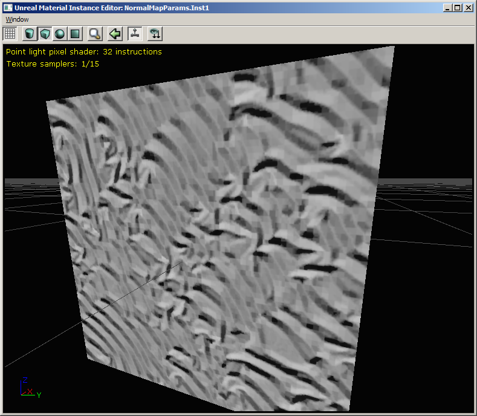
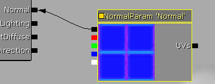

UDN
Search public documentation:
NormalMapFormatsJP
English Translation
中国翻译
한국어
Interested in the Unreal Engine?
Visit the Unreal Technology site.
Looking for jobs and company info?
Check out the Epic games site.
Questions about support via UDN?
Contact the UDN Staff
中国翻译
한국어
Interested in the Unreal Engine?
Visit the Unreal Technology site.
Looking for jobs and company info?
Check out the Epic games site.
Questions about support via UDN?
Contact the UDN Staff
Normalmap(法線マップ)フォーマット
ドキュメントの概要:UE3によりサポートされているさまざまな法線マップフォーマットについての情報 ドキュメントの変更ログ: Jack Porter により作成。概要
バージョンQA_APPROVED_BUILD_SEP_2009(2009年9月QA認証ビルド)以降、エンジンは法線マップフォーマットをサポートしています。このドキュメントでは、各フォーマットの利点、不利点およびNormal Parameterマテリアルノードの使い方を解説していきます。Normal(法線)フォーマット
この表はNormal(法線)フォーマットの機能を解説しています。| 圧縮設定 | テクスチャフォーマット | チャンネル | ピクセルごとのビット | 1024x1024 のサイズ | コメント |
| TC_Normalmap | DXT1 | 3(*) | 4 | 512 KB | * DXT1 のアルファチャンネルに 1-ビットアルファ(マスク)を格納することが可能 |
| TC_NormalmapAlpha | DXT5 | 4 | 8 | 1024 KB | |
| TC_NormalmapUncompressed | V8U8 | 2 | 16 | 2048 KB | のメモリ使用が4xのため、エンジンはDXT1 フットプリントに適合するため、自動的に解像度をミップマップ1ごとずつ減らす。 |
| TC_NormalmapBC5 | BC5 (3Dc / DXN) | 2 | 8 | 1024 KB | DirectX 10 およびXbox 360、またはDirectX 9下でのATI カードでサポートされている。 |
TC_Normalmap / DXT1

TC_Normalmap (DXT1) は、あらゆるフォーマットでのメモリ使用量が一番少ないですが、DXT ブロック圧縮は法線データ格納には非常に適していません。これにより、見た目が非常にガクガクした感じになってしまいます。TC_NormalmapAlpha / DXT5
TC_NormalmapAlpha (DXT5) は、DXT1 に対して視覚的に同一の結果が得られますが、マスクとして使用するために、圧縮アルファチャンネルデータのピクセルごとに4ビットもあります。DXT5 テクスチャで必要なマスクをおいた方が、他のテクスチャをサンプリングするよりはパフォーマンス的に非常に良いです。ただ、diffuse テクスチャにマスクをおいた場合、法線用に他のフォーマットを使用することが可能になります。TC_NormalmapUncompressed / V8U8
 圧縮されていないフォーマットは、各8ビット(ピクセルごとでは16ビットになる)でNormal (法線)の3チャンネルの2つを格納します。これは最高品質ですが、チャンネルが2つしか格納されないためで、Zはピクセルシェーダにて計算される必要があります。(マテリアルエディタはこれを自動的に行います。増加した命令数は上記のスクリーンショットにあります)
メモリ使用量がDTX1の4倍のため、XとYの解像度を半分（例：1ミップマップレベル）にすることでメモリ使用量を同一にします。解像度を半分にした圧縮されていない法線は、DXT1 の圧縮された法線よりも見た目が良いと思います。そのため *TC_NormalmapUncompressed フォーマットを選択すると、テキスチャエディタは自動的に解像度を低くします。*他のフォーマットに戻すと、テクスチャの最初の解像度が復元されます。
(このコードは、削除またはこの機能を無効にする場合は、UTexture2D::Compress() にあります。)
圧縮されていないフォーマットは、各8ビット(ピクセルごとでは16ビットになる)でNormal (法線)の3チャンネルの2つを格納します。これは最高品質ですが、チャンネルが2つしか格納されないためで、Zはピクセルシェーダにて計算される必要があります。(マテリアルエディタはこれを自動的に行います。増加した命令数は上記のスクリーンショットにあります)
メモリ使用量がDTX1の4倍のため、XとYの解像度を半分（例：1ミップマップレベル）にすることでメモリ使用量を同一にします。解像度を半分にした圧縮されていない法線は、DXT1 の圧縮された法線よりも見た目が良いと思います。そのため *TC_NormalmapUncompressed フォーマットを選択すると、テキスチャエディタは自動的に解像度を低くします。*他のフォーマットに戻すと、テクスチャの最初の解像度が復元されます。
(このコードは、削除またはこの機能を無効にする場合は、UTexture2D::Compress() にあります。)
TC_NormalmapBC5 / BC5 (3Dc / DXN)
BC5 フォーマット、3Dc またはDXN として知られているフォーマットはすべてのプラットフォームではサポートされていません。DirectX 10、Xbox 360 およびATIグラフィックスカードのDirectX 9 下でのみのサポートとなります。法線のXおよびYベクトルには、DXT5のアルファチャンネルに同様なピクセルにつき4ビットのブロック圧縮方法を使います。つまりこれは、チャンネルがそれぞれ独立しているということです。これにより、ぎざぎざした感じがより少なくなり、DXT5のメモリ量と同じ結果が得られます。圧縮されていないフォーマットなどといった、Zはピクセルシェーダで派生されます。マテリアルエディタ使用方法の注記
フォーマットによってはピクセルシェーダにZチャンネルが再構築されるのを要求するため、異なるフォーマットのテクスチャを使用することは、異なるピクセルシェーダコードが要求されます。マテリアルエディタはこれを処理してくれますが、これには気づいておいていただきたい落とし穴もあります。TextureSample ノード
TextureSample ノード内でのNormal(法線)のフォーマットを使用すると正しく動作します。しかし、法線フォーマットはマテリアルのシェーダが再コンパイルされる時のみにチェックされます。そのため、シェーダの再コンパイルなしで、法線テクスチャの CompressionSettingsを変更すると、生成されたピクセルシェーダコードが一致しない恐れがあります。これはUnpackMin/Maxと同様な挙動をします。TextureSampleParameter2D ノード
TextureSampleParameter2D ノードのデフォルト値内でNormal(法線)のフォーマットを使用をすることで、正しく動作します。しかしながら、デフォルト値をオーバーライドするマテリアルインスタンスは パラメータの デフォルトのTexture プロパティとして同じCompressionSettings を持たなければなりません。 TextureSampleのような、シェーダの再コンパイルなしでのデフォルトテクスチャのCompressionSettings の変更についての同じ警告が適用されます。TextureSampleParameterNormal ノード

TextureSampleParameterNormal ノードのデフォルト値内でNormal(法線)のフォーマットを使用をすることで正しく動作し、マテリアルインスタンスエディタで作成された定数インスタンスは、あらゆるフォーマットのテクスチャのNormal(法線)パラメータをオーバーライドすることができます。フォーマットが異なるピクセルシェーダを要求する場合は、新しいバージョンのインスタンスが再コンパイルされます。 ですが、TextureSampleなどは、シェーダの再コンパイルなしでのデフォルトテクスチャのCompressionSettings の変更についての同じ警告が適用されます。推奨
- コンテンツにとって見た目が良い場合は、TC_Normalmapの代わりに、解像度をさげて TC_NormalmapUncompressed を使用します。メモリ使用量は同じです。
- Xbox 360 ゲームを作成している場合は、TC_NormalmapBC5 を使用します。解像度を下げたTC_NormalmapUncompressed と比べると質の違いを感じることができ、これは2倍のメモリ量の増加に値します。
- パラメータとして法線マップを使う必要がある場合は、TextureSampleParameterNormal マテリアルノードを使うよう推奨します。
- 生成されたシェーダの数を減らすためには、特定のマテリアルインスタンスで使用している法線マップフォーマットが一致しなければなりません。